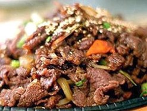

Korean Beef BBQ (Bulgogi) Recipe
What is Korean Beef BBQ (Bulgogi)?
This most popular Korean BBQ Beef dish is made from marinated thin slices of beef marinated in sweet garlicky soy sauce that is traditionally grilled over an open flame.
Ingredients
1/2 kilo beef tenderloin boneless
1 tablespoon sesame seeds
3 scallions chopped
2 garlic cloves minced
2 teaspoons rice wine vinegar
1 1/2 tablespoons water
3 tablespoons soy sauce
1 tablespoon sugar
1 tablespoon sesame oil
1/2 teaspoon pepper
2 tablespoons oil
1 tablespoon fresh ginger minced
1 tablespoon garlic minced
3 carrots peeled and sliced on diagonal
1/4 cup water
1/4 pounds snow peas
Instructions / How to Cook
1. Wrap beef in plastic wrap and freeze until firm (but not rock hard). Once firm, slice beef thinly across the grain.
2. Place in baking dish. In a small skillet toast sesame seeds.
3. To create marinade, in small bowl combine scallions, garlic, vinegar, water, soy sauce, sugar, sesame oil and pepper.
4. Stir well. Pour marinade over beef. Let sit for 30 minutes.
5. In separate skillet heat oil. Add ginger and garlic and cook until aroma is released.
6. Add carrots and 1/4 cup water. Simmer until carrots are tender, about 2 minutes.
7. Add snow peas and simmer until tender, about 2 minutes.
8. Remove beef from baking dish and grill until brown around edges, about 30 seconds per side.
9. Add vegetables to beef. Stir and sprinkle with sesame seeds. Serve with boiled white rice.